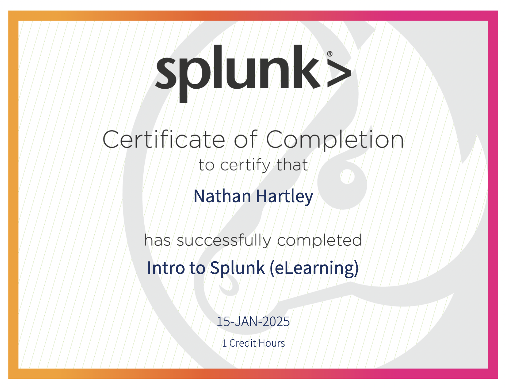
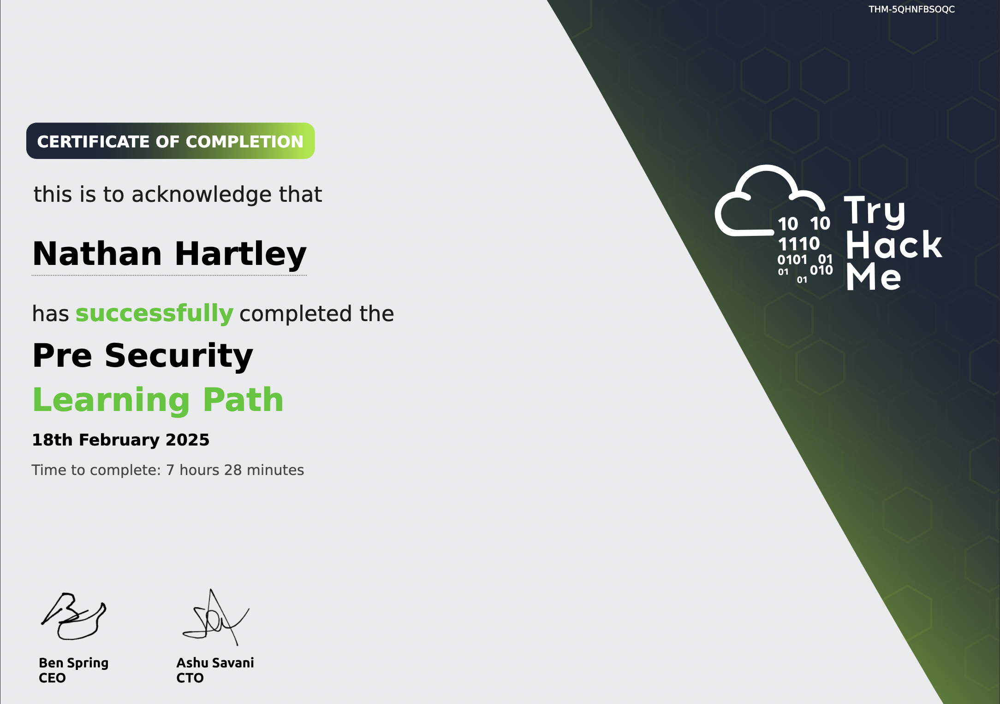

June to June
Posted on 27/06/2025
Word count: 2470
The past 12 months have truly been some the most rewarding months of my life. From competing in CTF competitions, to graduating university, to scoring my first job in the cyber industry.
It's easy for me to get caught up in the present and I often forget to look back at how far I've come, which can make me feel like I haven't accomplished much. So this post is dedicated to showcasing my activities and achievements over the past year to remind myself of the effort I've put in to deepening my understanding of the cyber landscape and staying ahead of the game. I'm proud of the progress I've made and I'm excited to share this with you!
June 2024
June starts by commencing the end of an era, my time at University. I had now officially completed my BSc in Computer Science with Cyber Security, and had attended graduation where I received my First Class degree.
Now unfurled the intimidating task of job hunting. But before I could focus on that, I needed to ensure that I was prepared for any upcoming interviews. I had never studied cyber security before university and this course taught the subject at a very high level, rushing through the basics. This meant I never really solidified my foundational cyber knowledge, for which I was missing a lot of. So I took it upon myself to take on some introductory courses, starting with TryHackMe's Introduction to Cyber Security course.
July 2024
Through June and into July I focused on rewriting my CV to make it appear more professional, taking on small personal projects to flesh out my experience.
By the end of July I had also completed the Introduction to Cyber Security course mentioned above, totally 9.25 hours of studying and covering a plethora of topics. These included: introductions to offensive and defensive security concepts, overviews of security operation teams and other cyber careers, digital forensics, and the fundamental concepts behind web app, network, and operating system security.
Introduction to Cyber Security Certificate
August 2024
Our student accommodation tenancy was approaching its end, so it was time to say goodbye to my university friends who I'd grown so close to.
I continued to develop small personal projects and pour my time into participating in courses whilst I was living in my old childhood house. But I wouldn't be staying here for long as my hard work had paid off and I had received a job offer for my first security focused role!
September 2024
September mainly consisted of finding new accommodation down South and getting prepared to move out. Within a few weeks of accepting my job offer, I had now taken the leap and relocated over 100 miles away from my previous home.
October 2024
Log analysis is a core part of my job, and with only a month's experience at my company, I was experimenting with scripting to help automate reviewing logs. This can be found in my Simple FortiGate project on GitHub. It's quite rudimentary and still needs improvement, but it was a good introduction into scripting.
Additionally, I had also published my first project to my website; Higher or Lower. A small collection of games to help with code practice across multiple languages.
November 2024
Now that I had spent time going through various cyber focused courses and solidifying the basics, I wanted to gain some hands on hacking experience. So I started to go through HackTheBox's beginner boxes named Starting Points that act as an introduction into learning how to penetrate a machine.
November also commenced the first round of the UK Cyber Team Competition 2024. I had never signed up to a CTF competition before but was really keen to get involved in the CTF community, so I decided to sign up for the UKCTC. For a novice like me, the first round was incredibly difficult, but I managed to scrape through and achieve enough points to enter the second and final round!
UKCTC Finalist Badge
December 2024
My current position focuses heavily on defensive security, but I find offensive to be just as (if not more) interesting. Though I feel that the bar for entry in terms of initial knowledge is so much higher for offensive security activities than for defensive. Because of this, I was spending a lot of my free time trying to improve my penetration techniques.
So I started with picoCTF, a CTF hosting website created by PPP, a hacking group with several DefCon black badges under their belt. Throughout December and into January, I had completed most of the picoCTF's easy challenges.

Overall picoCTF progress
January 2025
January turned out to be quite a busy month, consisting of lots of developing, hacking, and travelling.
During the first week, the second round of the UK Cyber Team Competition started which thankfully I found to be significantly easier than the first. Two weeks later I was then invited to attend the final in-person round hosted at Birmingham. It was a fantastic event where I got to meet so many new people and was introduced to my team. Unfortunately we didn't win but it was a great experience nonetheless and is definitely something I would like to participate in again if it continues this year!
UKCTC Event
Since I'm using various SIEM tools more often in my job, I completed an Introduction to Splunk course to understand the structure of a Splunk setup.
Intro to Splunk Certificate
In January I had embarked on creating a cryptographically strong password generator web extension, which I named Romulus. This was a very fun project to develop and taught me a lot about web extension development and secure randomness within JavaScript. I've written a full markdown of it which can be found on my website here.
February 2025
I had taken on another more detailed cyber course right after I finished my previous Intro to Cyber Security TryHackMe course back in July 2024. But since I was now in full-time employment, it was harder to dedicate my free time towards it. Nevertheless, in February 2025 I had completed this course, Pre-Security, totalling 7.5 hours of studying which covered the fundamentals of Windows and Linux operating systems, and a more in-depth look into the inner workings of the web and networking.
Pre Security Certificate
I was also experimenting with creating my malicious scripts, starting off with a very simple Python keylogger to better understand how malware is deployed and operates on a machine. It offers basic keystroke capturing with encryption. The markup for this can be found on my website here.
March 2025
The Lenovo IdeaPad 3i laptop has been my affordable daily driver for a few years now and still serves me very well, but it did have its limitations with a poor quality LCD screen, only 256GB SSD, and an i5 core.
Stickered-up Lenovo IdeaPad 3i
So I decided to purchase a second hand MacBook M1 Pro, a significant upgrade in processing power and screen quality to my previous laptop. To be honest, I would not have purchased the M1 at full price and was lucky to get the offer I got. I've been using it for a few months and I'm really enjoying the experience so far, but I'm not a fan of the command key because it makes actions like copying and pasting between the Mac's native shell and anything within a Linux VM very difficult. So I'm keeping my old laptop around to host my VMs and act like a cyber deck for participating in CTFs and hacking challenges, whilst my Mac will be used for other general purposes and code development.
Blåhaj using my Macbook M1 Pro
April 2025
April was certainly a very busy month for me. Firstly, I got the incredible opportunity to travel to The Hague and participate in the TRANSITS 1 course lead by TF-CSIRT on the fundamentals of incident management. This was a three day intensive course covering the following modules:
- Organisational - how incident management teams fit within their organisations and the roles of a CERT/CSIRT team.
- Operational - the incident management process from initial reports, through triage, investigation, resolution, closure, to post-analysis.
- Technical - how intruders attack systems and their motivations, how network protocols can be abused, vulnerabilities of operating systems and services, (D)DoS attacks, hiding traces, and information gathering techniques.
- Legal - areas of European legislation likely to affect incident management entities in their work, such as data protection, computer misuse, and working with law enforcement.
TRANSITS 1 Certificate
Only a week after my trip to The Hague, I then travelled to Prague to attend the Security Days 2025 conference where we got to exchange threat intelligence between National Research and Education Networks and receive security best practices from cyber security industry professionals.

Overlooking the city of Prague
The day I came back from Prague, I participated in the 1753CTF challenge. This challenge was fairly difficult and I only managed to achieve a few points, having not had that much CTF practice since January, but it was fun to interact with the community nonetheless. This is only the second CTF event that I've ever attended, and I plan to sign up to many more!
After the CTF event, it was obvious to me that I still needed to improve on my penetration skills, so I went searching for other websites that facilitated hacking practice. I came across OverTheWire's Wargames, a great website for practicing all sorts of intrusion skills and Linux commands. I started with the Bandits challenges where currently I am at level 19 of 34 that provides hands on practice to using and understanding various Linux commands. This has been incredibly useful so far. I've also completed a handful of levels in the Natas challenges category which focus more on web exploitation. This is definitely a step up in difficulty but I welcome the challenge, and I'd like to aim to complete both of these categories by the end of the year.
I've also started taking advantage of Immersive Labs who host some free defensive security courses called Cyber Million Fundamental. So far I've only completed the Secure Fundamentals module which covers a lot of content that I've already gained through previous courses or job experience, but I still aim to go through the rest of the modules they offer.
Unfortunately, the TryHackMe learning path I was currently partaking in titled Complete Beginner which I started back in February had been discontinued. I'd spent a good number of hours on it and had got through 49% of the course before it had been taken down and merged into other paths. So instead I picked up the Cyber Security 101 course which thankfully included a lot of content that I'd previously covered in the discontinued course such as network exploitation, cryptography, and a few others.
May 2025
Thanks to all the Linux based challenges I was completing and my increased use of various Linux based VMs, I was getting very comfortable with this operating system and was wanting to create more distance between myself and Windows. My Lenovo laptop was still running Windows 11 but I wanted to switch this to Linux without committing to removing Windows entirely, so I decided to dual boot my laptop with Kubuntu (Ubuntu + KDE). So far I'm a big fan of this operating system and I will eventually work towards removing Windows all together.
In May I also worked on a project to help me improve my networking knowledge. For this, I recreated the TCP stack, where a client and server could send data between them through established TCP connections. This project facilitates setting client and server states, parsing TCP flags between the client and server to establish a connection, simulating a packet structure and being able to populate this with data. I'm still not quite finished with this project but it's been a lot of fun to work on so far, once this is completed I will write a markdown and publish it on my website.
I took a small break from the Cyber Security 101 TryHackMe course to work on the Advent of Cyber 2024 challenge in which you receive an in-platform badge and certificate on completion. This was a great event and covered many different topics from both offensive and defensive security areas. These ranged from investigating alerts in a simulated SOC environment, to performing log and traffic analysis, to exploiting web sockets, phishing, hash cracking, prompt injection, and much more.
Advent of Cyber Certificate
Just in TryHackMe alone, I have now completed 45 rooms, achieved 5 badges and 3 certificates, and rank in the top 9% of all THM users. Considering I have only been using this platform for a year, and have been juggling a full time job on top of this, I'm quite happy with my progress!
TryHackMe Badges
June 2025
Finally we have reached June which officially marks an entire year since I graduated from university. This month has still been very busy for me! I attended the Infosecurity Europe 2025 conference where I got to meet so many amazing security focused companies (and get lots of swag from them), and attend some fascinating talks, most notably "Black Holes and Quantum Computers" by Brian Cox, and "The Cyber Cold War" by Paul Chichester - NCSC Director of Operations.
Paul Chichester speaking at Infosecurity Europe
I also noticed some other familiar faces from this conference; Mikko Hyppönen and Jenny Radcliffe who I know from the Darknet Diaries podcast, and Graham Cluley who hosts the Smashing Security podcast.
A week later I attended the TNC25 conference which isn't so much of a cyber security focused conference but more for general collaboration between National Research and Education Networks (NRENs) who my company works closely with. The talks presented were definitely interesting and it was great to speak with lots of networking/technical professionals. My favourite talks surrounded the logistics of deploying sub marine fibre optical cables over large oceans.
Olaf Verschoor speaking at TNC25
Overall, this has been a fantastic and an incredibly rewarding year. I've made significant progress in my professional career and overall cyber security knowledge, and I'm excited to see what the coming year will bring! I have a few future projects lined up, including designing a new profile picture for my website and other platforms, building a CLI tool, and recreating real computer hardware through Minecraft redstone. I'm also looking forward to attending BSides Cheltenham this July, as well as a CTF event at Warwick University.